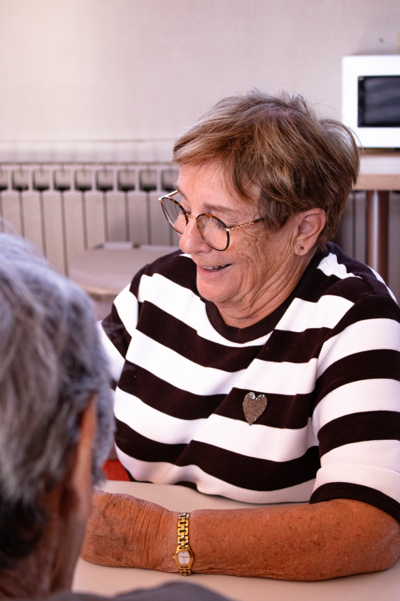
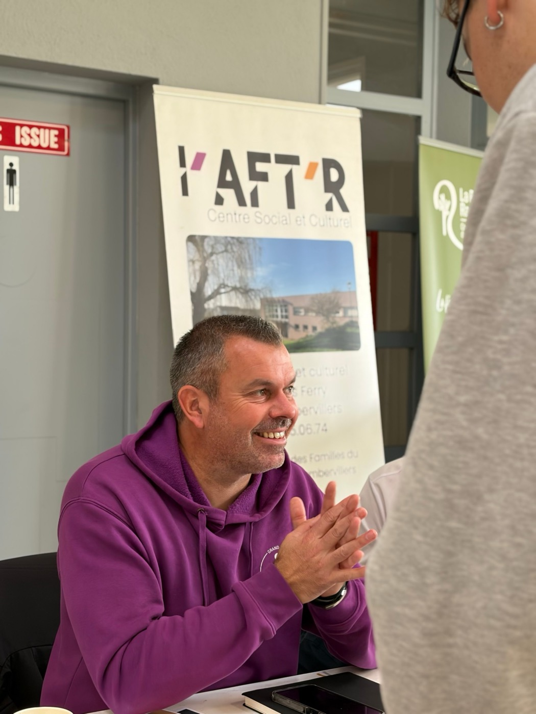
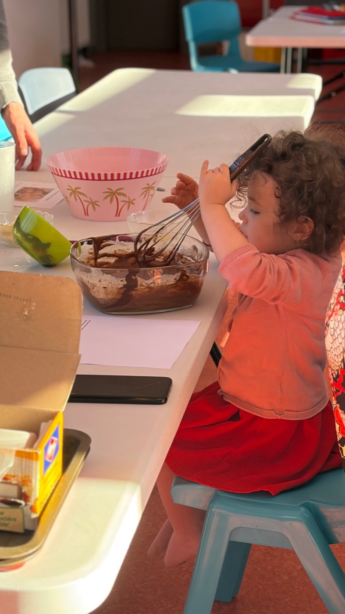
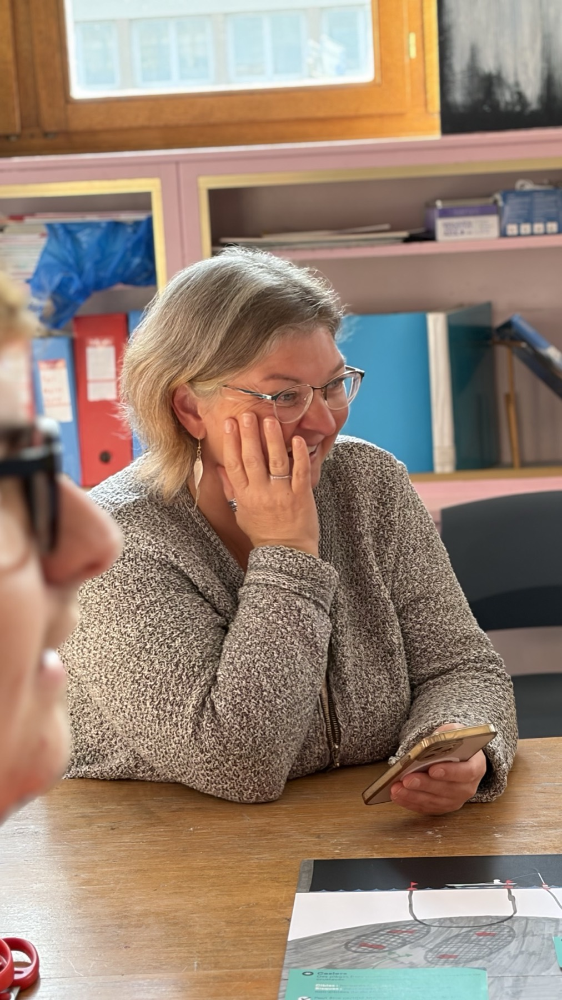
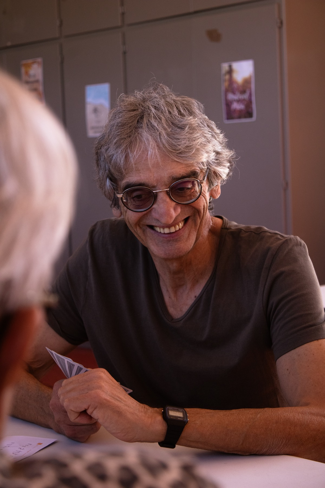
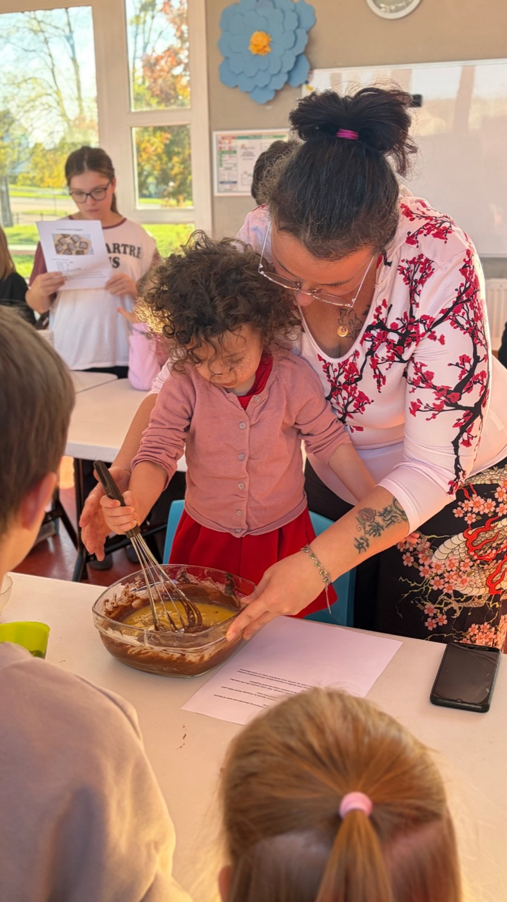
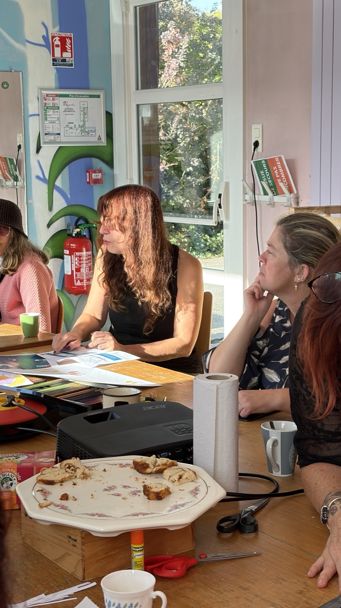

- Contexte
- Organisation
- Photo
- Contenus
- Résultats
Alternante chargée de communication • centre social AFT'R, Rambervillers
Mon rôle : faire connaître le centre à travers celles et ceux qui le font vivre. Je réalise les photos et les vidéos, puis je les publie pour donner envie d'en pousser la porte.
Du 1er septembre au 14 novembre 2026, comparé à la même période en 2025 · Meta Business Suite
La structure
Le Centre social et culturel AFT'R, à Rambervillers, accueille seniors (groupe « Arts et Merveilles »), familles (Café des parents, LAEP, ateliers cuisine « À Table ! ») et jeunes de 11 à 17 ans.
Le point de départ
Sur les douze mois précédant mon arrivée, Instagram n'avait touché que 299 comptes au total, avec environ 690 vues par mois. Facebook reste le réseau historique : 1 539 abonnés au 15/11/2026, contre 75 sur Instagram.
Ma mission
Piloter la communication globale : site web, réseaux sociaux, supports print et web, couverture des événements en photo et en vidéo.
[INFO MANQUANTE : objectifs fixés à ton arrivée par ta tutrice ou la direction]




- Contexte
- Organisation
- Photo
- Contenus
- Résultats
Étude de cas AFT'R · Organisation & media planning
J'ai conçu un planning éditorial sur Google Sheets : un onglet par mois et une ligne par jour. Chaque publication y est décrite par sa catégorie, son format, son statut, une case « Design » cochée lorsque le visuel est prêt, et son texte complet.
Chaque statut colore la ligne entière, ce qui permet de repérer immédiatement ce qui reste à rédiger, ce qui attend une information et ce qui est déjà programmé dans Meta Business Suite. Lorsqu'une information manque (un tarif, une date), je la signale entre crochets en tête du texte, afin de ne rien publier d'approximatif.
| Jour | Catégorie | Type | Statut | Texte |
|---|---|---|---|---|
| mar. 06/10 | Magie | ✅ Programmé | 🎩✨ Prêts à réveiller le magicien qui est en vous ? | |
| mer. 07/10 | Escape game | ✅ Programmé | 🎃 Prêts à frissonner et à relever un défi créatif… | |
| jeu. 08/10 | Retour séniors | ✅ Programmé | 🌟 Envie de partager de bons moments… | |
| lun. 12/10 | Vidéo À table | ✅ Programmé | 🍽️ Retour sur un délicieux moment de partage ! | |
| mer. 14/10 | Café des parents | ✅ Programmé | ☕ Besoin d'une pause ou d'échanger entre parents ? | |
| ven. 30/10 | Programme Arts et Merveilles | Post | ✅ Programmé | [À CONFIRMER avant publication : tarif…] |
| sam. 31/10 | Retour escape game | Reel / Vidéo | ✅ Programmé | 🕵️ Mystère résolu ! |
Extrait de mon planning éditorial, onglet « Oct » (textes tronqués).
Les 5 statuts d'une publication
- Contexte
- Organisation
- Photo
- Contenus
- Résultats
Étude de cas AFT'R · Photographie événementielle
Je couvre les ateliers en reportage, sur le vif : des regards, des gestes, des rires. Ces images donnent envie de pousser la porte du centre et alimentent ensuite les publications, les carrousels et les Reels.



- Contexte
- Organisation
- Photo
- Contenus
- Résultats
Étude de cas AFT'R · Contenus produits
Un fil Instagram centré sur les personnes : des visages, des ateliers et des programmes clairs, présentés en carrousel.
Le format le plus efficace : un membre de l'équipe, face caméra, qui présente son activité en quelques secondes. Le Reel du LAEP en est le modèle.


- Contexte
- Organisation
- Photo
- Contenus
- Résultats
Étude de cas AFT'R · Résultats & analyse
Du 1er septembre au 14 novembre 2026, comparé à la même période en 2025. Les indicateurs en baisse sont également présentés : ils font partie de l'analyse.
Source : Meta Business Suite, relevé du 15/11/2026. Certaines valeurs sont arrondies par Meta (milliers), les évolutions sur les interactions Facebook sont donc approximatives.